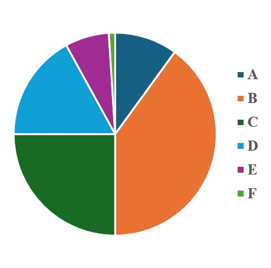
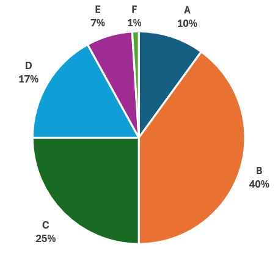
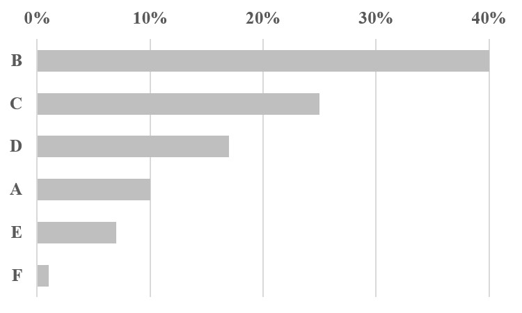
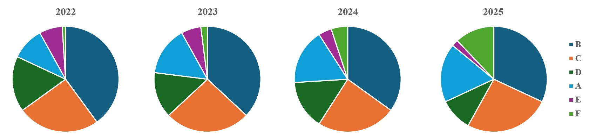
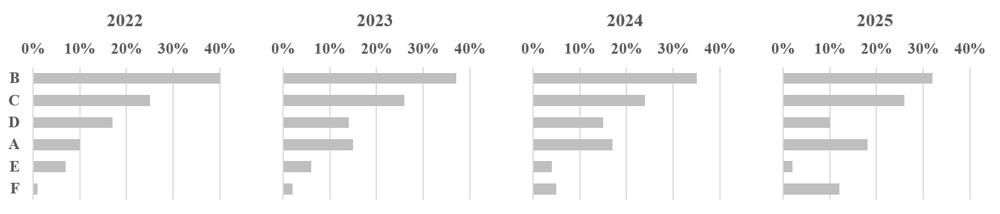
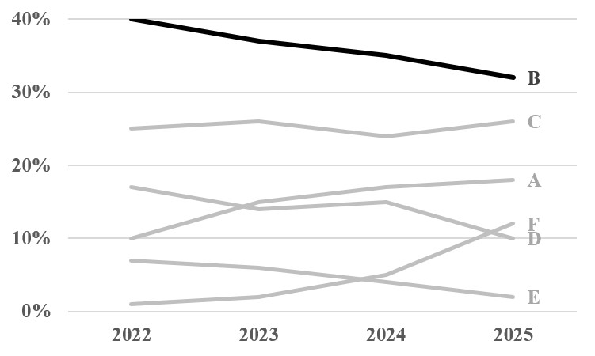

This special section dives into a wildly popular yet deeply flawed visualization: the pie chart. In its classic form, it is a circular graph sliced into wedges, with each piece supposedly showing its share of the whole. Over the years, this concept has mutated into even stranger variants. We have the "exploded" pie chart, where a few slices are dramatically pulled out to highlight their importance, and the donut chart, which is just a regular pie chart with a giant hole punched through the middle. The most perplexing mutant of all is definitely the 3D pie chart, which adds artificial depth and makes reading the data an absolute nightmare. To sum it up: they all have major issues, and frankly, they can be downright evil.
While a “bad” tool is just unhelpful, an “evil” one actively works to cause harm, and pie charts are clearly out for blood. Someone at Microsoft really needs to consider removing them from Excel entirely, if only to save unsuspecting users from accidentally unleashing these wicked visuals onto the world. For a clear demonstration of this pure chart malevolence, look no further than Figure 1, which features a pie chart tracking six items labeled A through F. Just try staring at it and guessing what exact percentage item E represents without getting a headache; it is a task so brutal it would make the Impossible Mission Force pack up and go home.

Figure 1. Basic pie chart.
Because this particular pie chart is an absolute riddle, your first instinct might be to fire the legend and slap labels directly onto each individual slice. It sounds like a solid rescue plan, right? Unfortunately, this "fix" completely backfires in Figure 2. Instead of a clean, intuitive graphic, you end up with a chaotic, shape-shifting circular spreadsheet overflowing with text and numbers. It completely defeats the purpose of using a chart in the first place, proving once again that you can’t dress up an inherently evil visualization layout and expect it to behave.

Figure 2. Basic pie chart with labels.
If you want to save yourself the visual gymnastics, a simple table makes reading the exact same information infinitely easier (as beautifully demonstrated in Table 1). It turns out that plain old rows and columns can easily out-perform a chaotic data circle any day of the week, proving that sometimes, skipping the fancy graphics is the ultimate power move.
Table 1. Generic Data for Pie Graphs
Items B and C have most of the data
This data was listed in decreasing order by percentage
Item
Percentage (%)
B
40
C
25
D
17
A
10
E
7
F
1
If you actually want to show this data visually without causing a minor corporate crisis, a horizontal bar chart like the one in Figure 3 works infinitely better. This beautiful graphic lets you instantly compare how each item stacks up against the competition, doing away with the visual chaos by using a single, sophisticated shade of grey. Instead of assaulting your audience’s eyes with six different neon colors like a box of melted crayons, it keeps things classy with just one. It turns out less really is more when you want people to actually understand your data.

Figure 3. Bar chart from a pie chart.
The legendary data guru Edward Tufte famously declared that the only thing worse than a single pie chart is a whole army of them. He pointed out that stacking them up forces viewers to compare quantities that are completely scrambled, both inside each individual circle and across the entire lineup (Edward Tufte, The Visual Display of Quantitative Information, Graphics Press, 1983, p. 178. doi: 10.5555/33404). Figure 4 perfectly illustrates this chaotic scenario by throwing four separate pie charts at us, each tracking the same six items over four different years. Instead of giving us a clean look at annual trends, this layout turns basic trend-spotting into an exhausting game of visual hide-and-seek, meaning you essentially need a minor miracle to see if an item is growing, shrinking, or just spinning in circles.

Figure 4. Four sequential pie charts.
Ditching those chaotic, multi-colored pie charts and converting them into the four clean, no-nonsense, black-and-white horizontal bar charts in Figure 5 is like turning off a loud siren in a quiet room. Instantly, the visual noise vanishes, the formatting gets out of the way, and your metrics can finally speak for themselves. It turns out that trading a rainbow kaleidoscope for simple, data-driven bars is the ultimate shortcut to making your insights perfectly clear to anyone looking at the page.

Figure 5. Four sequential bar charts from pie charts.
Let’s be honest: since this data is tracking a timeline, a simple line graph is the undisputed champion for the job. In the line graph featured in Figure 6, the story practically tells itself without any visual gymnastics. The reader can instantly spot that Product B, proudly rocking a bold black line, consistently holds the crown for the largest market share every single year, even though its value is currently in a spectacular, rapid freefall. It is clean, it is obvious, and nobody needs a magnifying glass to see exactly where the business is heading.

Figure 6. One line graph from four sequential pie charts.